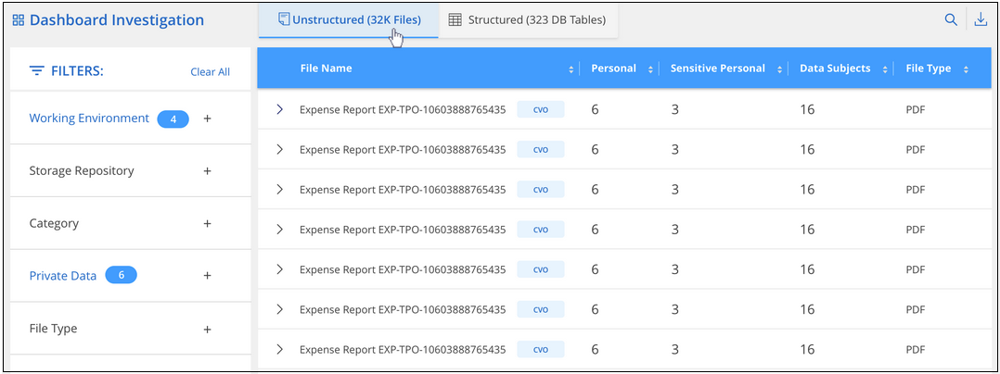
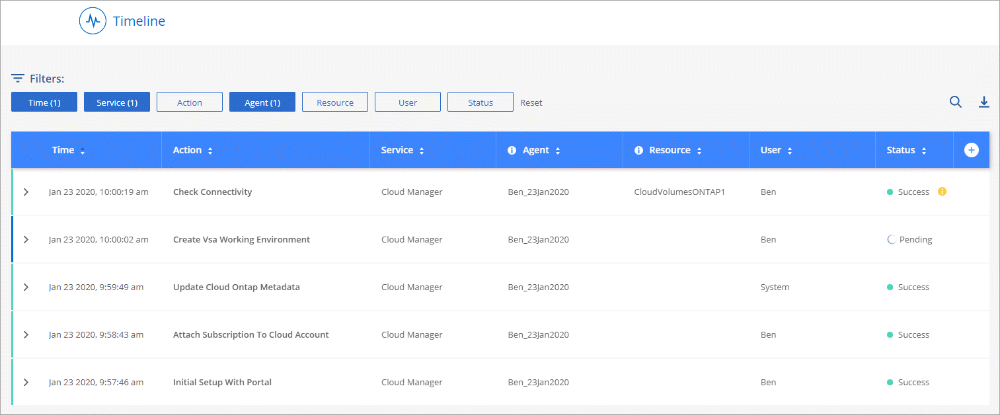

Go to the docs for the latest release.
What’s new in Cloud Manager 3.8
Contributors
 Download PDF of this page
Download PDF of this page
Cloud Manager typically introduces a new release every month to bring you new features, enhancements, and bug fixes.
|
Looking for a previous release? What’s new in 3.7 What’s new in 3.6 What’s new in 3.5 |
New Terraform provider (19 Oct 2020)
We have developed a new Terraform provider that DevOps teams can use with Cloud Manager to automate and integrate Cloud Volumes ONTAP with infrastructure as code.
Cloud Manager 3.8.9 update (18 Oct 2020)
By leveraging Spot’s Cloud Analyzer, Cloud Manager can now provide a high-level cost analysis of your cloud compute spending and identify potential savings. This information is available from the Compute service in Cloud Manager. Learn more.

Cloud Manager 3.8.9 update (13 Oct 2020)
We have released two Cloud Tiering updates:
-
Licensing for Cloud Tiering is now available from Cloud Manager.
Pay for data tiering from an on-prem ONTAP cluster to the cloud through a pay-as-you-go subscription, an ONTAP tiering license called FabricPool, or a combination of both.
-
The standalone Cloud Tiering service has been retired. You should now access Cloud Tiering directly from Cloud Manager where all of the same features and functionality are available.
Cloud Manager 3.8.9 (4 Oct 2020)
Cloud Compliance enhancements
-
A new Cloud Compliance Viewer role is available in Cloud Manager.
Users who are assigned this role can only view compliance information and generate reports for workspaces that they have permission to access. They cannot manage Cloud Compliance settings and they cannot access any other Cloud Manager features and services. This may be the perfect role for your legal team so they can monitor Cloud Compliance scan results. See user roles for details.
-
Added support to scan MongoDB and PostgreSQL database schemas. See scanning database schemas for more information.
-
Cloud Compliance pricing is changing as of October 7th.
The first 1 TB of data that Cloud Compliance scans in a Cloud Manager workspace is free. This includes data from Cloud Volumes ONTAP volumes, Azure NetApp Files volumes, Amazon S3 buckets, and database schemas. A subscription is required to scan any additional data after you reach 1 TB. See pricing for details.
Cloud Volumes Service for AWS enhancements
When creating a new volume, you can choose to base that volume on an existing Snapshot copy of another volume.
Cloud Sync integration
NetApp’s Cloud Sync service is now available from within Cloud Manager. Cloud Sync offers a simple, secure, and automated way to migrate your data from any source destination to any target destination, in the cloud or on your premises. Learn more.
Account management enhancements
We’ve added more ways to manage your account.
-
An overview of your account resources is now available.
You can quickly view the number of users, workspaces, Connectors, and subscriptions in your account.
-
You can change the name of your account.
-
You can copy your account ID, workspace ID, or Connector ID.
Copying these IDs will help with automation features that we’re planning.
-
You can disable use of the SaaS platform.
We don’t recommend disabling the SaaS platform unless you need to in order to comply with your company’s security policies. Disabling the SaaS platform limits your ability to use NetApp’s integrated cloud services. Learn more.

Changes for Government regions
If you deploy a Connector in an AWS GovCloud region, an Azure Gov region, or an Azure DoD region, access to Cloud Manager is now available only through a Connector’s host IP address. Access to the SaaS platform is disabled for the entire account.
This means that only privileged users who can access the end-user internal VPC/VNet can use Cloud Manager’s UI or API.
Cloud Manager 3.8.8 update (22 Sept 2020)
We enhanced the Kubernetes service to make it easier to use and to provide additional capabilities:
-
We’ve made it easier to discover the Kubernetes clusters running in your cloud provider’s managed Kubernetes service.
Just click Discover Clusters and Cloud Manager will discover your managed clusters using the cloud provider permissions that you’ve already provided.
-
You can now view more information about a discovered Kubernetes cluster, including its state, the number of volumes, storage classes, and more.

-
We’ve added resource and error checking to ensure that communication is available between the cluster and Cloud Volumes ONTAP. And if it isn’t, then we’ll let you know.
Note that the service account for a Connector requires the following permissions to discover and manage Kubernetes clusters running in Google Kubernetes Engine (GKE):
- container.*Cloud Manager 3.8.8 update (10 Sept 2020)
The following enhancements are available when deploying Global File Cache through Cloud Manager:
-
A Cloud Volumes ONTAP HA pair in AWS is now supported as the backend storage platform for your central storage.
-
Multiple Global File Cache Core instances can be deployed in a Load Distributed design.
Cloud Manager 3.8.8 (9 Sept 2020)
Support for Cloud Volumes Service for Google Cloud
-
Add a working environment to manage existing Cloud Volumes Service for GCP volumes and to create new volumes. Learn how.
-
Create and manage NFSv3 and NFSv4.1 volumes for Linux and UNIX clients, and SMB 3.x volumes for Windows clients.
-
Create, delete, and restore volume snapshots.
Backup to Cloud now supports on-premises ONTAP clusters
Start backing up data from your on-premises ONTAP systems to the cloud. Enable Backup to Cloud on your on-prem working environments to back up volumes to Azure Blob storage. Learn more.
Backup to Cloud enhancements
We revised the user interface for better usability:
-
Volume list page to easily see the volumes being backed up along with the available backups
-
Backup settings page to view backup settings for each working environment
Cloud Compliance enhancements
-
Ability to scan data from databases
Scan your databases to identify the personal and sensitive data that resides in each schema. Supported databases include Oracle, SAP HANA, and SQL Server (MSSQL). Learn more about scanning databases.
-
Ability to scan data protection (DP) volumes
DP volumes are destination volumes from SnapMirror operations typically from on-premises ONTAP clusters. Now you can easily identify the personal and sensitive data that resides in those on-prem files. See how.
Refreshed navigation
We’ve refreshed the header in Cloud Manager to make it easier for you to navigate between NetApp cloud services.
Click View All Services and you can pin and unpin the services that you want to see in the navigation.

As you can see, we’ve also refreshed the Account, Workspace, and Connector drop-downs, so it’s easier to view your current selections.
Administration improvements
-
You can now remove inactive Connectors from Cloud Manager. Learn how.

-
You can now replace the Marketplace subscription that’s currently associated with your cloud provider credentials. If you ever need to change how you’re charged, this change can help you ensure that you’re being charged through the right Marketplace subscription.
Update on required Azure permissions (6 Aug 2020)
To avoid Azure deployment failures, make sure that your Cloud Manager policy in Azure includes the following permission:
"Microsoft.Resources/deployments/operationStatuses/read"Azure now requires this permission for some virtual machine deployments (it depends on the underlying physical hardware that’s used during deployment).
Cloud Manager 3.8.7 (3 Aug 2020)
New software-as-a-service experience
We have fully introduced a software-as-a-service experience for Cloud Manager. This new experience makes it easier for you to use Cloud Manager and enables us to provide additional features to manage your hybrid cloud infrastructure.
Cloud Manager includes a SaaS-based interface that is integrated with NetApp Cloud Central, and Connectors that enable Cloud Manager to manage resources and processes within your public cloud environment. (The Connector is actually the same as the existing Cloud Manager software that you have installed.)
| A Connector is required in most cases, but it’s not required to use Azure NetApp Files, Cloud Volumes Service, or Cloud Sync from Cloud Manager. |
As previously mentioned in these release notes, you’ll need to upgrade the machine type for your Connectors to access the new capabilities that we’re offering. Cloud Manager will prompt you with instructions to change the machine type. Learn more.
Cloud Volumes ONTAP enhancements
Two enhancements are available for Cloud Volumes ONTAP.
-
Multiple BYOL licenses to allocate additional capacity
You can now purchase multiple licenses for a Cloud Volumes ONTAP BYOL system to allocate more than 368 TB of capacity. For example, you might purchase two licenses to allocate up to 736 TB of capacity to Cloud Volumes ONTAP. Or you could purchase four licenses to get up to 1.4 PB.
The number of licenses that you can purchase for a single node system or HA pair is unlimited.
Be aware that disk limits can prevent you from reaching the capacity limit by using disks alone. You can go beyond the disk limit by tiering inactive data to object storage. For information about disk limits, refer to storage limits in the Cloud Volumes ONTAP Release Notes.
-
Encrypt Azure managed disks using external keys
You can now encrypt Azure managed disks on single node Cloud Volumes ONTAP systems using external keys from another account. This feature is supported using APIs.
You just need to add the following to the API request when creating the single node system:
"azureEncryptionParameters": { "key": <azure id of encryptionset> }This feature requires new permissions as shown in the latest Cloud Manager policy for Azure.
"Microsoft.Compute/diskEncryptionSets/read"
Azure NetApp Files enhancements
This release includes several enhancements in support of Azure NetApp Files.
-
Azure NetApp Files setup
You can now set up and manage Azure NetApp Files directly from Cloud Manager. Learn how.
-
New protocol support
You can now create NFSv4.1 volumes and SMB volumes.
-
Capacity pool and volume snapshot management
Cloud Manager enables you to create, delete, and restore volume snapshots. You can also create new capacity pools and specify their service levels.
-
Ability to edit volumes
You can edit a volume by changing its size and managing tags.
Cloud Volumes Service for AWS enhancements
There are many enhancements in Cloud Manager in support of Cloud Volumes Service for AWS.
-
New protocol support
Now you can create NFSv4.1 volumes, SMB volumes, and dual protocol volumes. Previously you could only create and discover NFSv3 volumes within Cloud Manager.
-
Snapshot support
You can create snapshot policies to automate the creation of volume snapshots, create an on-demand snapshot, restore a volume from a snapshot, create a new volume based on an existing snapshot, and more. See Managing cloud volumes snapshots for more information.
-
Create the initial volume in a region from Cloud Manager
Before this release the first volume in each region had to be created in the Cloud Volumes Service for AWS interface. Now you can subscribe to one of the NetApp Cloud Volumes Service offerings on the AWS Marketplace and then create the first volume from Cloud Manager.
Cloud Compliance enhancements
The following enhancements are now available for Cloud Compliance.
-
Revised deployment process for your Cloud Compliance instance
The Cloud Compliance instance is set up and deployed using a new wizard in Cloud Manager. After deployment is complete you enable the service for each working environment you want to scan.
-
Ability to select the volumes to be scanned within a working environment
Now you can enable and disable scanning for individual volumes in a Cloud Volumes ONTAP or Azure NetApp Files working environment. If you don’t need to scan certain volumes for compliance, turn them off.
-
Navigation tabs to quickly jump to your area of interest
New tabs for Dashboard, Investigation, and Configuration enable you to get to these sections more easily.
-
HIPAA Report
A new Health Insurance Portability and Accountability Act (HIPAA) Report is now available. This report is designed to aid in your organization’s requirement to comply with HIPAA data privacy laws.
-
New sensitive personal data type
Cloud Compliance can now find ICD-9-CM Medical Codes in files.
-
New personal data type
Cloud Compliance can now find two new national identifiers in files: Croatian ID (OIB) and Greek ID.
Backup to Cloud enhancements
The following enhancements are now available for Backup to Cloud.
-
Bring Your Own License (BYOL) is now available
Backup to Cloud has been available only with a Pay As You Go (PAYGO) license. A BYOL license allows you to purchase a license from NetApp to use Backup to Cloud for a certain period of time and for a maximum amount backup space. When either limit is reached you will need to renew the license.
-
Support for data protection (DP) volumes
Data protection volumes can be backed up and restored now.
Support for Global File Cache
NetApp Global File Cache enables you to consolidate silos of distributed file servers into one cohesive global storage footprint in the public cloud. This creates a globally accessible file system in the cloud that all distributed locations can use as if they were local.
Starting with this release, the Global File Cache Management instance and Core instance can be deployed and managed through Cloud Manager. This saves many hours during your initial deployment process and provides a single pane of glass through Cloud Manager for this and other deployed systems. Global File Cache Edge instances are still deployed locally at your remote offices.
See Global File Cache overview for more information.
The initial configuration that can be deployed using Cloud Manager must meet the following requirements. Other configurations like Cloud Volumes Service, Azure NetApp Files, and Cloud Volumes Service for AWS and GCP continue to be deployed using the legacy procedures. Learn more.
-
The backend storage platform that is used as your central storage must be a working environment where you have deployed a Cloud Volumes ONTAP HA pair in Azure.
Other storage platforms and other cloud providers are not supported at this time using Cloud Manager but can be deployed using legacy deployment procedures.
-
The GFC Core can be deployed only as a stand-alone instance.
If you need to use a Load Distributed design that includes multiple Core instances you must use the legacy procedures.
This feature requires new permissions as shown in the latest Cloud Manager policy for Azure.
"Microsoft.Resources/deployments/operationStatuses/read",
"Microsoft.Insights/Metrics/Read",
"Microsoft.Compute/virtualMachines/extensions/write",
"Microsoft.Compute/virtualMachines/extensions/read",
"Microsoft.Compute/virtualMachines/extensions/delete",
"Microsoft.Compute/virtualMachines/delete",
"Microsoft.Network/networkInterfaces/delete",
"Microsoft.Network/networkSecurityGroups/delete",
"Microsoft.Resources/deployments/delete",Improved experience requires stronger machine type (15 July 2020)
As we improve the Cloud Manager experience, you’ll need to upgrade your machine type to access the new capabilities that we’ll be offering. The improvements will include a software-as-a-service experience for Cloud Manager and new and enhanced cloud service integrations.
Cloud Manager will prompt you with instructions to change the machine type.
Here are some details:
-
To ensure adequate resources are available for proper functionality of the new features in Cloud Manager, we’ve changed the default instance, VM, and machine type as follows:
-
AWS: t3.xlarge
-
Azure: DS3 v2
-
GCP: n1-standard-4
These default sizes are the minimum supported based on CPU and RAM requirements.
-
-
As part of this transition, Cloud Manager requires access to the following endpoint so it can obtain software images of container components for a Docker infrastructure:
https://cloudmanagerinfraprod.azurecr.io
Ensure that your firewall enables access to this endpoint from Cloud Manager.
Cloud Manager 3.8.6 (6 July 2020)
Support for iSCSI volumes
Cloud Manager now enables you to create iSCSI volumes for Cloud Volumes ONTAP and on-prem ONTAP clusters directly from the user interface.
When you create an iSCSI volume, Cloud Manager automatically creates a LUN for you. We’ve made it simple by creating just one LUN per volume, so there’s no management involved. After you create the volume, use the IQN to connect to the LUN from your hosts.
| You can create additional LUNs from System Manager or the CLI. |
Support for the All tiering policy
You can now choose the All tiering policy when you create or modify a volume for Cloud Volumes ONTAP. When you use the All tiering policy, data is immediately marked as cold and tiered to object storage as soon as possible. Learn more about data tiering.
Cloud Manager transition to SaaS (22 June 2020)
We’re introducing a software-as-a-service experience for Cloud Manager. This new experience makes it easier for you to use Cloud Manager and enables us to provide additional features to manage your hybrid cloud infrastructure. Learn more.
Cloud Manager 3.8.5 (31 May 2020)
New subscription required in the Azure Marketplace
A new subscription is available in the Azure Marketplace. This one-time subscription is required to deploy Cloud Volumes ONTAP 9.7 PAYGO (except for your 30-day free trial system). The subscription also enables us to offer add-on features for Cloud Volumes ONTAP PAYGO and BYOL. You’ll be charged from this subscription for every Cloud Volumes ONTAP PAYGO system that you create and each add-on feature that you enable.
Cloud Manager will prompt you to subscribe to this offering when you deploy a new Cloud Volumes ONTAP system (9.7 P1 or later).

Backup to Cloud enhancements
The following enhancements are now available for Backup to Cloud.
-
In Azure, you can now create a new resource group or select an existing resource group instead of having Cloud Manager create one for you. The resource group can’t be changed after you enable Backup to Cloud.
-
In AWS, you can now back up Cloud Volumes ONTAP instances that reside on a different AWS account than your Cloud Manager AWS account.
-
Additional options are now available when selecting the backup schedule for volumes. In addition to daily, weekly, and monthly backup options, you can now select one of the system-defined policies that provide combination policies such as 30 daily, 13 weekly, and 12 monthly backups.
-
After deleting all backups for a volume, you can now start creating backups again for that volume. This was a known limitation in the previous release.
Cloud Compliance enhancements
The following enhancements are available for Cloud Compliance.
-
You can now scan S3 buckets that are in different AWS accounts than the Cloud Compliance instance. You just need to create a role on that new account so that the existing Cloud Compliance instance can connect to those buckets. Learn more.
If you configured Cloud Compliance before release 3.8.5, you will need to modify the existing IAM role for the Cloud Compliance instance to use this functionality.
-
You can now filter the contents of the investigation page to display only the results you want to see. Filters include working environment, category, private data, file type, last modified date, and whether the S3 object’s permissions are open to public access.

-
You can now activate and deactivate Cloud Compliance on a working environment directly from the Cloud Compliance tab.
Cloud Manager 3.8.4 update (10 May 2020)
We released an enhancement to Cloud Manager 3.8.4.
Cloud Insights integration
By leveraging NetApp’s Cloud Insights service, Cloud Manager gives you insights into the health and performance of your Cloud Volumes ONTAP instances and helps you troubleshoot and optimize the performance of your cloud storage environment. Learn more.
Cloud Manager 3.8.4 (3 May 2020)
Cloud Manager 3.8.4 includes the following improvement.
Backup to Cloud enhancements
The following enhancements are now available for Backup to Cloud (previously called Backup to S3 for AWS):
-
Backing up to Azure Blob storage
Backup to Cloud is now available for Cloud Volumes ONTAP in Azure. Backup to Cloud provides backup and restore capabilities for protection, and long-term archive of your cloud data. Learn more.
-
Deleting backups
You can now delete all backups for a specific volume directly from the Cloud Manager interface. Learn more.
Cloud Manager 3.8.3 (5 Apr 2020)
Cloud Tiering integration
NetApp’s Cloud Tiering service is now available from within Cloud Manager. Cloud Tiering enables you to tier data from an on-premises ONTAP cluster to lower-cost object storage in the cloud. This frees up high-performance storage space on the cluster for more workloads.
Data migration to Azure NetApp Files
You can now migrate NFS or SMB data to Azure NetApp Files directly from Cloud Manager. Data syncs are powered by NetApp’s Cloud Sync service.
Cloud Compliance enhancements
The following enhancements are now available for Cloud Compliance.
-
30-day free trial for Amazon S3
A 30-day free trial is now available to scan Amazon S3 data with Cloud Compliance. If you previously enabled Cloud Compliance on Amazon S3, your 30-day free trial is active starting today (5 Apr 2020).
A subscription to the AWS Marketplace is required to continue scanning Amazon S3 after the free trial ends. Learn how to subscribe.
-
New personal data type
Cloud Compliance can now find a new national identifier in files: Brazilian ID (CPF).
-
Support for additional metadata categories
Cloud Compliance can now categorize your data into nine additional metadata categories. See the full list of supported metadata categories.
Backup to S3 enhancements
The following enhancements are now available for the Backup to S3 service.
-
S3 lifecycle policy for backups
Backups start in the Standard storage class and transition to the Standard-Infrequent Access storage class after 30 days.
-
Deleting backups
You can now delete backups using a Cloud Manager API. Learn more.
-
Block public access
Cloud Manager now enables the Amazon S3 Block Public Access feature on the S3 bucket where backups are stored.
iSCSI volumes using APIs
The Cloud Manager APIs now enable you to create iSCSI volumes. View an example here.
Cloud Manager 3.8.2 (1 Mar 2020)
Amazon S3 working environments
Cloud Manager now automatically discovers information about the Amazon S3 buckets that reside in the AWS account where it’s installed. This enables you to easily see details about your S3 buckets, including the region, access level, storage class, and whether the bucket is used with Cloud Volumes ONTAP for backups or data tiering. And you can scan the S3 buckets with Cloud Compliance, as described below.

Cloud Compliance enhancements
The following enhancements are now available for Cloud Compliance.
-
Support for Amazon S3
Cloud Compliance can now scan your Amazon S3 buckets to identify the personal and sensitive data that resides in S3 object storage. Cloud Compliance can scan any bucket in the account, regardless if it was created for a NetApp solution.
-
Investigation page
A new Investigation page is now available for each type of personal file, sensitive personal file, category, and file type. The page shows details about the affected files and enables you to sort by the files that include the most personal data, sensitive personal data, and names of data subjects. This page replaces the CSV report that was previously available.
Here’s a sample:

-
PCI DSS Report
A new Payment Card Industry Data Security Standard (PCI DSS) Report is now available. This report can help you identify the distribution of credit card information across your files. You can view how many files contain credit card information, whether the working environments are protected by encryption or ransomware protection, retention details, and more.
-
New sensitive personal data type
Cloud Compliance can now find ICD-10-CM Medical Codes, which are used in the medical and health industry.
NFS version for volumes
You can now select the NFS version to enable on a volume when you create or edit a volume for Cloud Volumes ONTAP.

Support for Azure US Gov regions
Cloud Volumes ONTAP HA pairs are now supported in Azure US Gov regions.
Cloud Manager 3.8.1 update (16 Feb 2020)
We released a few enhancements to Cloud Manager 3.8.1.
Backup to S3 enhancements
-
Backup copies are now stored in an S3 bucket that Cloud Manager creates in your AWS account, with one bucket per Cloud Volumes ONTAP working environment.
-
Backup to S3 is now supported in all AWS regions where Cloud Volumes ONTAP is supported.
-
You can set the backup schedule to daily, weekly, or monthly.
-
Cloud Manager no longer needs to set up private links to the Backup to S3 service.
Additional S3 permissions are required for these enhancements. The IAM role that provides Cloud Manager with permissions must include permissions from the latest Cloud Manager policy.
AWS updates
We’ve introduced support for new EC2 instances and a change in the number of supported data disks for Cloud Volumes ONTAP 9.6 and 9.7. Check out the changes in the Cloud Volumes ONTAP Release Notes.
Cloud Manager 3.8.1 (2 Feb 2020)
Cloud Compliance enhancements
The following enhancements are now available for Cloud Compliance.
-
Support for Azure NetApp Files
We’re pleased to announce that Cloud Compliance can now scan Azure NetApp Files to identify personal and sensitive data that resides on volumes.
-
Scan status
Cloud Compliance now shows you a scan status for each CIFS and NFS volume, including error messages that you can use to correct any issues.

-
Filter dashboard by working environment
You can now filter the contents of the Cloud Compliance dashboard to see compliance data for specific working environments.

-
New personal data type
Cloud Compliance can now identify a California Driver’s License when scanning data.
-
Support for additional categories
Three additional categories are supported: Application data, logs, and database and index files.
Enhancements to accounts and subscriptions
We’ve made it easier to select an AWS account or GCP project and an associated marketplace subscription for a pay-as-you-go Cloud Volumes ONTAP system. These enhancements help to ensure that you’re paying from the right account or project.
For example, when you create a system in AWS, click Edit Credentials if you don’t want to use the default account and subscription:

From there, you can choose the account credentials that you want to use and the associated AWS marketplace subscription. You can even add a marketplace subscription, if you need to.

And if you manage multiple AWS subscriptions, you can assign each one of them to different AWS credentials from the Credentials page in the settings:

Timeline enhancements
The Timeline was enhanced to provide you with more information about the NetApp cloud services that you use.
-
The Timeline now shows actions for all Cloud Manager systems within the same Cloud Central account
-
You can now find information more easily by filtering, searching, and adding and removing columns
-
You can now download the timeline data in CSV format
-
In the future, the Timeline will show actions for each NetApp cloud service that you use (but you can filter the information down to a single service)

Cloud Manager 3.8 (8 Jan 2020)
HA enhancements in Azure
The following enhancements are now available for Cloud Volumes ONTAP HA pairs in Azure.
-
Override CIFS locks for Cloud Volumes ONTAP HA in Azure
You can now enable a setting in Cloud Manager that prevents issues with Cloud Volumes ONTAP storage failover during Azure maintenance events. When you enable this setting, Cloud Volumes ONTAP vetoes CIFS locks and resets active CIFS sessions. Learn more.
-
HTTPS connection from Cloud Volumes ONTAP to storage accounts
You can now enable an HTTPS connection from a Cloud Volumes ONTAP 9.7 HA pair to Azure storage accounts when creating a working environment. Note that enabling this option can impact write performance. You can’t change the setting after you create the working environment.
-
Support for Azure general-purpose v2 storage accounts
The storage accounts that Cloud Manager creates for Cloud Volumes ONTAP 9.7 HA pairs are now general-purpose v2 storage accounts.
Data tiering enhancements in GCP
The following enhancements are available for Cloud Volumes ONTAP data tiering in GCP.
-
Google Cloud storage classes for data tiering
You can now choose a storage class for data that Cloud Volumes ONTAP tiers to Google Cloud Storage:
-
Standard Storage (default)
-
Nearline Storage
-
Coldline Storage
-
-
Data tiering using a service account
Starting with the 9.7 release, Cloud Manager now sets a service account on the Cloud Volumes ONTAP instance. This service account provides permissions for data tiering to a Google Cloud Storage bucket. This change provides more security and requires less setup. For step-by-step instructions when deploying a new system, see step 4 on this page.
The following image shows the Working Environment wizard where you can select a storage class and service account:

Cloud Manager requires the following GCP permissions for these enhancements, as shown in the latest Cloud Manager policy for GCP.
- storage.buckets.update
- compute.instances.setServiceAccount
- iam.serviceAccounts.getIamPolicy
- iam.serviceAccounts.list Edit on GitHub
Edit on GitHub